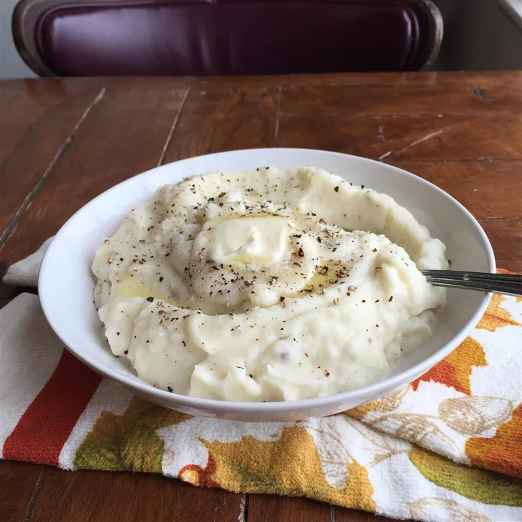

Holiday ONLY Mashed Potatoes

Description
American style mashed potatoes
Ingredients
- 5 pounds red potatoes, peeled and quartered
- 1 cup heavy cream
- 1/2 cup butter
- salt and pepper to taste
Directions
- Places potatoes in a large pot with enough water to cover. Bring to a boil, and cook until fork tender. About 20 minutes.
- Drain, add butter, and mash using a potato masher, ricer, or mixer
- Gradually beat in the heavy cream
- Serve hot!